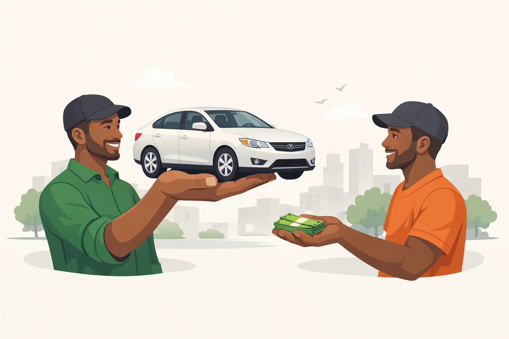
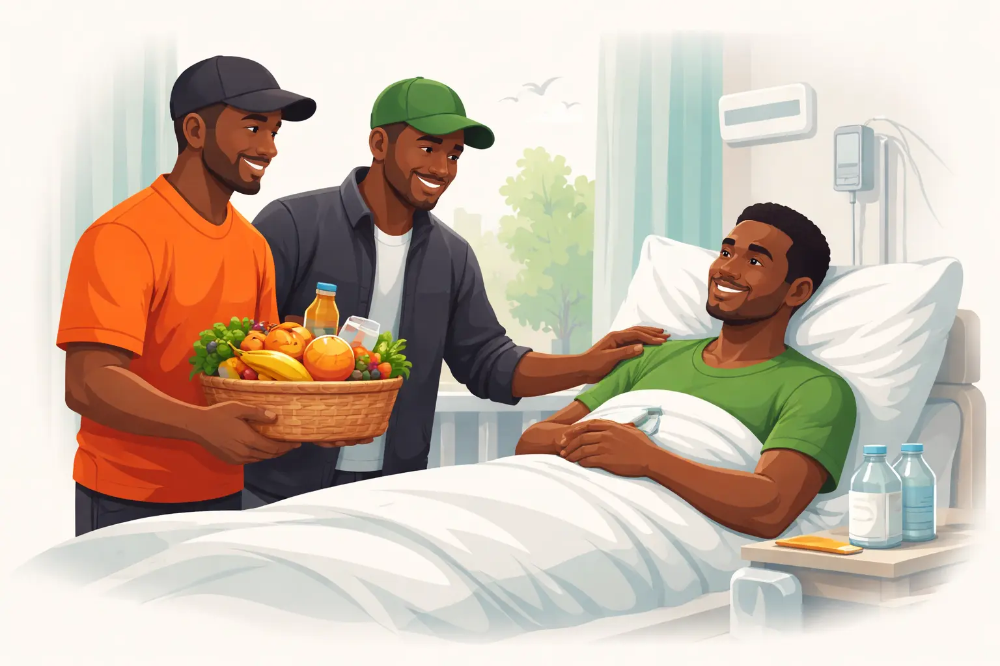
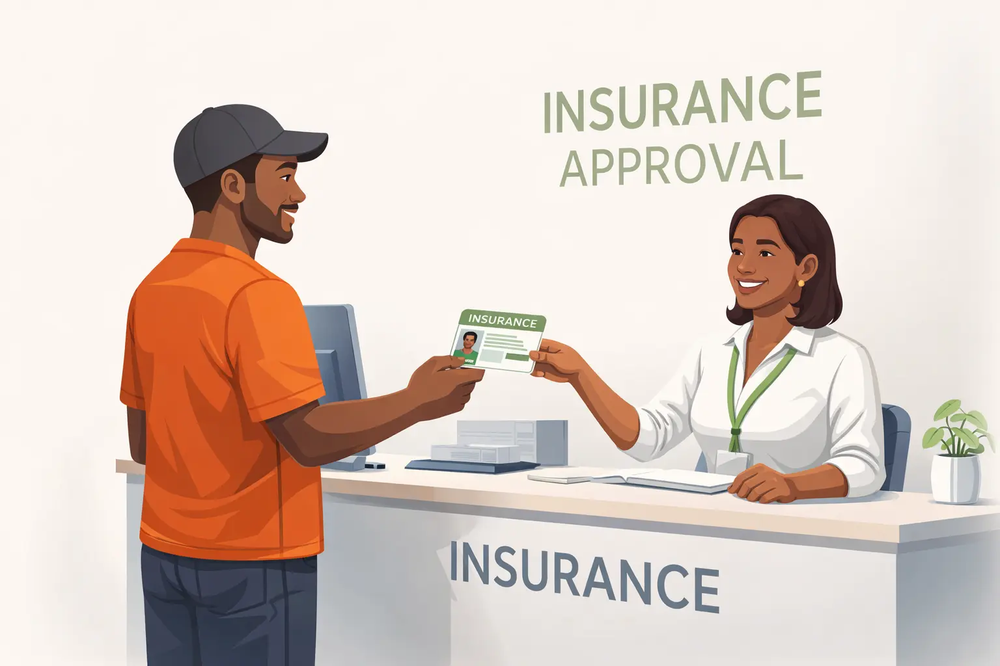
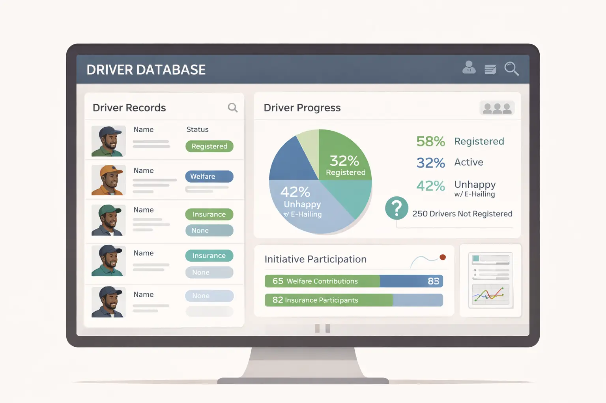
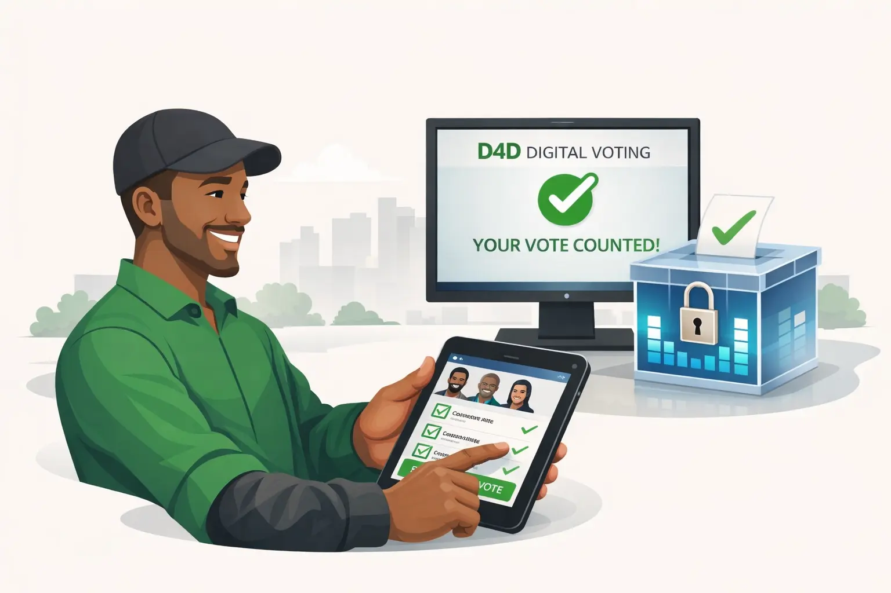
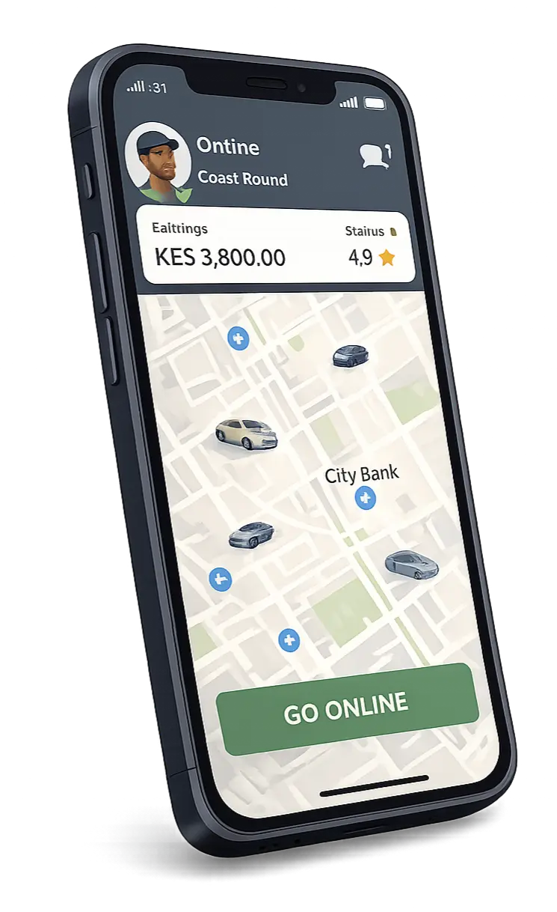
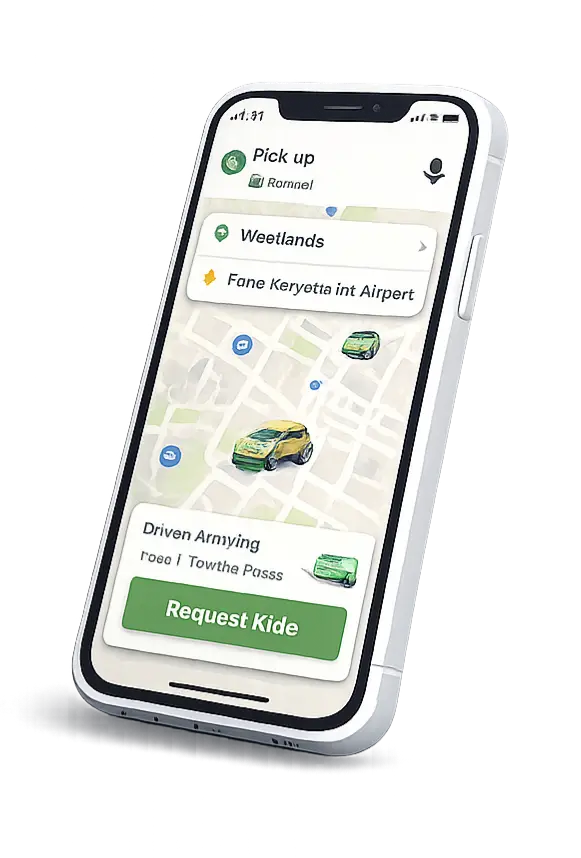

Driver for Drivers
D4D is a driver-first community built to solve real challenges drivers face every day using tech — unfair terms, lack of protection, and unstable opportunities. By standing together, drivers and car owners gain access to welfare support, verified partnerships, insurance options, and a stronger collective voice.
Driver–Owner Matching
D4D is building a trust-based matching system designed to connect drivers and car owners through verified information, clear expectations, and shared accountability — not informal brokers or blind arrangements.
The matching process is supported by structured digital records that help both parties make informed decisions before and during a working relationship. Driver profiles include verified document details such as identification and driving credentials, ensuring that connections begin from a position of legitimacy and transparency.
As relationships continue, continuous performance ratings help reflect reliability, professionalism, and consistency over time. These ratings are shaped by real working experiences, encouraging fair treatment and long-term cooperation rather than short-term exploitation.
In later stages, traceable payment records will further strengthen matching outcomes by creating clear histories of work and compensation. This reduces disputes, protects both drivers and car owners, and reinforces trust throughout the partnership.
Matching also includes basic protection mechanisms for both parties. When a car owner plans to withdraw a vehicle, the driver is notified early to allow time for transition. Likewise, if a driver intends to leave a working arrangement, car owners receive advance notice to plan responsibly. This reduces sudden losses, promotes fairness, and supports stable working relationships.
By combining verified documents, ongoing performance records, transparent payment histories, and early-notice protections, D4D’s matching system is designed to promote stability, fairness, and stronger partnerships across the entire community.

Welfare & Community
D4D’s welfare system exists for moments when life takes an unexpected turn — illness, loss, or hardship that arrives without warning.
Members contribute collectively to support fellow drivers and their nuclear families during critical moments, especially where insurance coverage is unavailable or has reached its limit.
Welfare support may include financial assistance during medical emergencies, contributions toward burial arrangements, or temporary relief for families affected by sudden loss. These contributions are not loans — they are acts of solidarity grounded in shared experience.
To ensure transparency and prevent abuse, every welfare case is verified through a peer-driven process. Randomly assigned drivers from within the community are tasked with confirming the situation on the ground, ensuring honesty, dignity, and accountability.
All contributions and disbursements are recorded transparently, allowing members to see how support flows within the community. This builds trust and reinforces the principle that welfare is a shared responsibility, not a hidden transaction.
Life does not announce its arrival with warnings. D4D’s welfare system exists because some things simply come without knocking — and no driver should face them alone.

Insurance Access
Driving is a livelihood built on risk — accidents, illness, and sudden loss can
erase years of hard work in a single moment.
For many drivers, insurance remains out of reach. Individual policies are often
expensive, restrictive, or designed without the realities of daily driving in
mind. As a result, most drivers operate unprotected, absorbing losses personally
when emergencies strike.
D4D approaches insurance differently — not as an individual burden, but as a
collective solution. By organizing drivers into a verified community, D4D
enables access to group insurance structures where risk is shared, costs are
reduced, and coverage becomes practical rather than theoretical.
Group insurance allows drivers to access medical, accident, and life-related
protection at fairer terms than individual plans. Contributions are lower,
eligibility is clearer, and benefits are structured around real driving risks —
not generic employment assumptions.
Insurance within D4D is not isolated from welfare — it works alongside it.
Insurance handles structured claims, while the welfare system supports drivers
and families when limits are exceeded or situations fall outside policy scope.
Together, they form a safety net designed by drivers, for drivers.
Beyond protection, insurance also strengthens drivers’ bargaining power. A
documented, insured community carries more weight when negotiating with
partners, financiers, and platforms. Protection is not just security — it is
leverage.
In a profession where tomorrow is never guaranteed, D4D believes protection
should not be optional, delayed, or exclusive. Insurance is not a luxury —
it is dignity, stability, and peace of mind for those who keep the economy moving.

Digital Records
Digital records are the backbone of an organized, respected, and effective driver
community.
Without records, drivers remain invisible — counted only when convenient and
ignored when decisions are made. D4D’s digital records system exists to ensure
drivers are seen, heard, and represented accurately.
Through verified records, D4D can understand the true size and strength of the
community — how many drivers are registered, how many are active, and how many
participate in initiatives such as welfare contributions, insurance programs,
or collective actions. This clarity allows fair planning and responsible
decision-making.
Digital records also help identify drivers who have not yet registered or fully
joined the ecosystem. This is not for exclusion or pressure, but for gentle,
informed engagement — allowing D4D to understand barriers, answer concerns, and
continue building trust over time.
When drivers feel suppressed, unfairly treated, or economically strained by
e-hailing platforms, digital records allow structured evidence collection.
Documented experiences, reports, and trends transform individual complaints
into collective facts that cannot be dismissed as isolated stories.
Aggregated data — such as what percentage of drivers are dissatisfied, what
policies cause the most strain, or where income instability is most severe —
helps D4D understand where the community is headed. Decisions are then guided
by reality, not assumptions.
Records also strengthen accountability within D4D itself. Contributions,
participation, and outcomes can be tracked transparently, ensuring trust is
maintained and leadership remains answerable to the community.
Digital records are not about surveillance. They are about visibility,
protection, and direction. When drivers are documented, they are no longer
ignored. When data is organized, progress becomes deliberate — not accidental.

Digital Voting & Leadership
D4D provides a secure digital voting system that enables drivers to elect their leaders fairly, transparently, and without intimidation.
Driver organizations such as UOD, DOD, SACCOs, and regional driver groups can use the platform to conduct verified elections where every eligible driver has an equal voice, regardless of location or schedule.
Voting is conducted digitally using verified driver identities, ensuring that only registered members participate and that each driver can vote only once. This removes common challenges such as physical turnout manipulation, duplicate voting, and undocumented results.
The system supports leadership elections, constitutional referendums, and major decision-making votes that affect the wider driver community. Results are tallied automatically and published transparently for all members to see.
To preserve trust, election processes are overseen through clear rules agreed upon in advance by the organization. Independent verification logs ensure that votes are recorded accurately without revealing individual voter choices.
Leadership gains legitimacy when it is chosen by the drivers themselves. Digital voting ensures that representation is earned through participation — not influence, fear, or physical presence.

Driver-Owned E-Hailing App Development


Building our own driver-owned e-hailing application is the greatest gift drivers
can give themselves.
Instead of surrendering 18% or more of every trip to external platforms, drivers
can collectively fund what truly matters — developers, system maintenance,
customer support, and operations — through a predictable, transparent monthly
contribution. No exploitation. No hidden cuts. Just shared responsibility.
This platform will be owned by drivers — not investors, not brokers, not third
parties. Decisions will be guided by real driving experience and real working
conditions.
The system is designed to reflect fairness on the road. It accounts for waiting
time, long pickup distances beyond 2km, additional passengers beyond one,
and compensation for trips into low-demand areas where return time is often lost.
It also introduces practical protections — fair reminders for passengers to
collect belongings, clearer trip expectations, and pricing logic that respects
both time and effort.
This is not about competing blindly with existing platforms. It is about building
a system that finally works for drivers — sustainable, transparent, and controlled
by the very people who keep it moving.